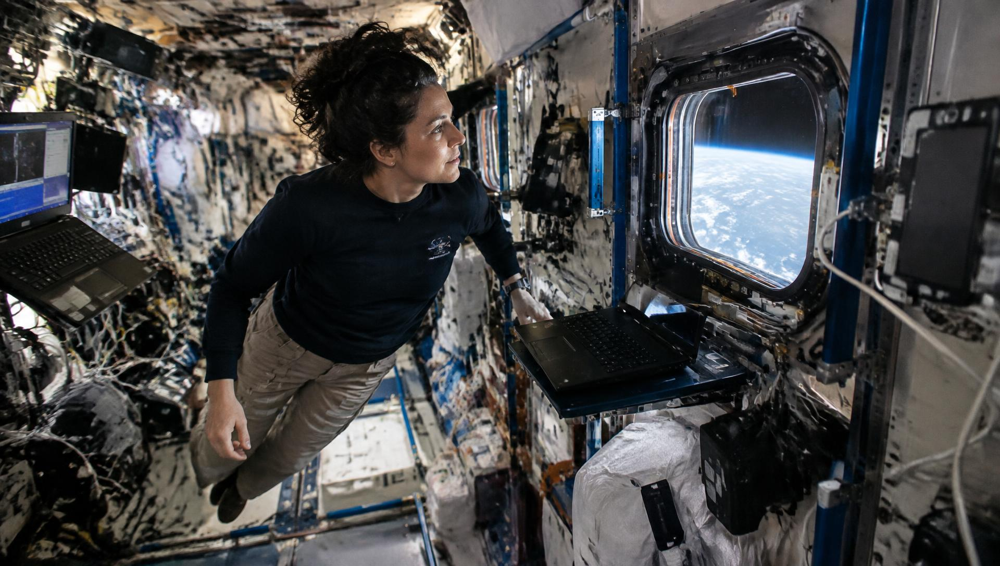
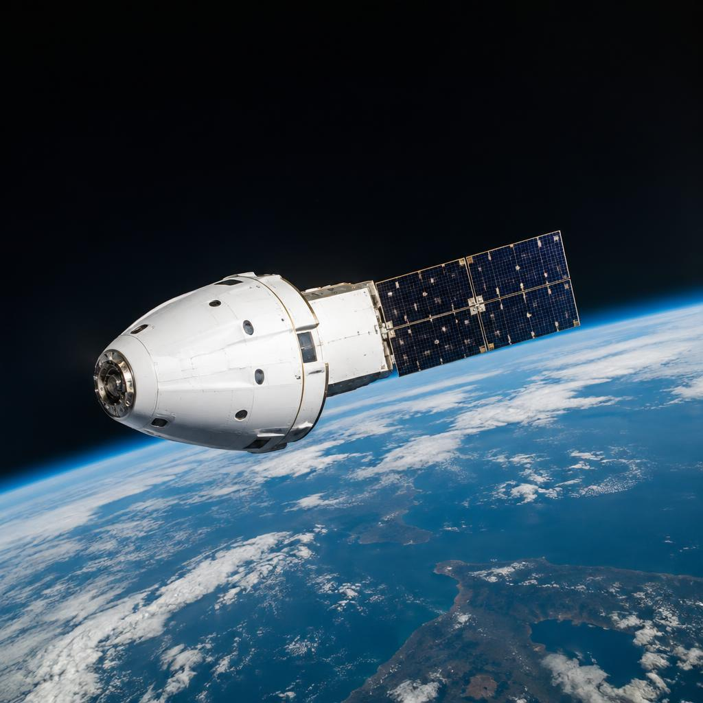
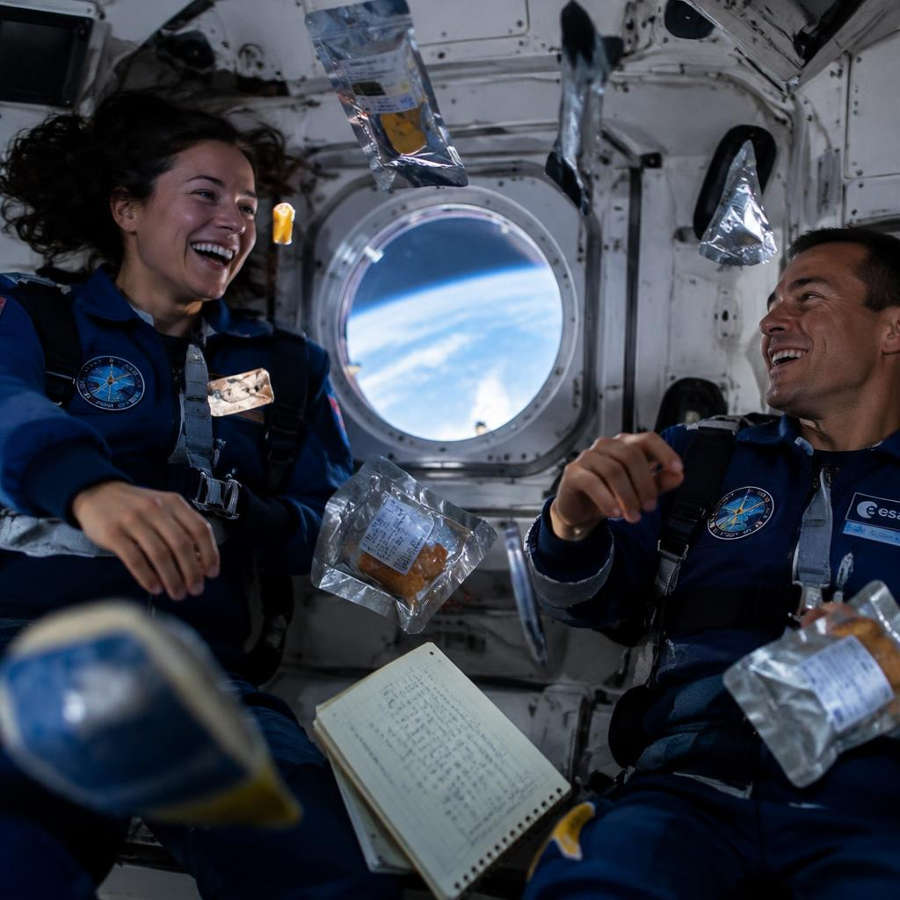
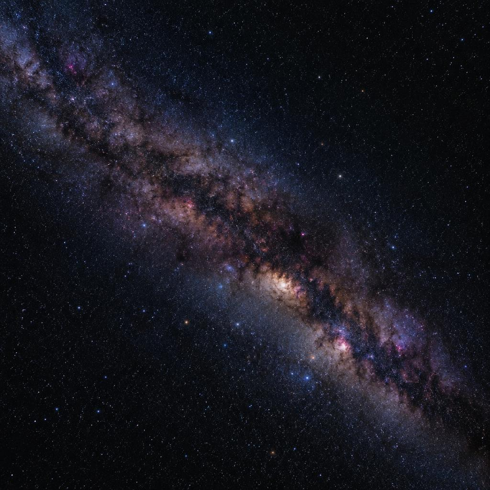

Human Spaceflight · Life in Orbit
Life in Orbit
Weightlessness is not the absence of gravity — it is falling around the planet and missing the ground. Here is what that means for every hour of a day on orbit.

Why astronauts float
Orbit is the art of falling and missing the ground. A spacecraft at 400 km altitude is still inside 90% of Earth's gravity — what keeps it aloft is speed: 7.8 km/s sideways, so fast that the ground curves away exactly as fast as the spacecraft falls toward it.
Everything inside falls together at the same rate, so nothing presses against anything else. That is weightlessness: not zero gravity, but zero relative motion between you and your surroundings. The same physics a thrown ball follows — just sustained forever.

A day aboard
Crews live on Greenwich Mean Time, sixteen sunrises a day notwithstanding. Sleep means zipping into a sleeping bag strapped to a cabin wall so you don't drift into equipment; most astronauts report their body simply forgets which way is up within days.
Food is pouches and sealed containers — crumbs are enemies in microgravity, so bread is tortillas and coffee is drunk through straws with lids. Liquids cling to surfaces by surface tension, so water behaves like slow syrup rather than pouring. Personal hygiene is no-rinse shampoo and wet wipes; showers don't exist up there.
Without gravity pulling on bones and muscles, bodies decondition quickly: crews exercise two hours a day on resistance machines and treadmill harnesses, which is also why returning astronauts spend weeks rebuilding their sense of balance.

Stepping outside
A spacewalk — an EVA, extravehicular activity — begins the night before: crews “camp out” at reduced cabin pressure to flush nitrogen from their blood, because the suit's lower pressure would otherwise form painful bubbles in joints, the bends.
Outside, work is anchored by handrails and tethers — a pushed-off astronaut does not slow down, so nothing is left loose. Tools tether to the suit, the suit tethers to the station, and every motion is rehearsed to the minute because the suit's oxygen and cooling water are finite. A typical EVA lasts six to seven hours and burns the equivalent of a marathon.

The view
The reward is the window: Earth scrolling underneath at 8 km per second, 16 orbits a day, an aurora rolling past at night. Crews describe the hardest part of coming home as losing that view — which is exactly why our capsules are built with windows.
Next: Launches